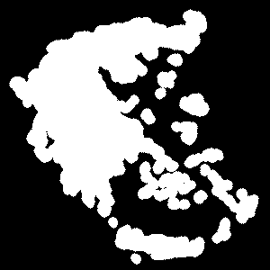
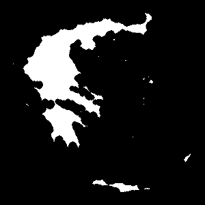
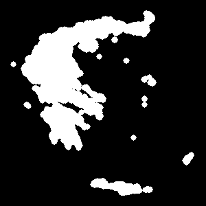
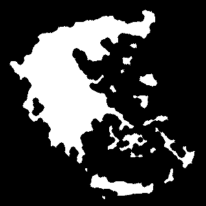

Conclusion#
Mathematical morphology is a collection of operators that deal with the shapes of objects. This chapter focused on some operators that apply to binary images, but there are extensions of these techniques to grayscale images.
Binary images are seen as sets forming objects (represented in white) on a background (represented in black). We have introduced the notion of connectivity and pixel neighborhood. The four basic operators of mathematical morphology perform operations by using a (often small) binary image called structuring element.

|
Original image |
|  | Dilation \(\oplus\)
|
|  | Erosion \(\ominus\)
|
|  | Opening \(\circ\)
|
|  | Closing \(\bullet\)
|
By combining the basic operators, powerful tools can be defined.